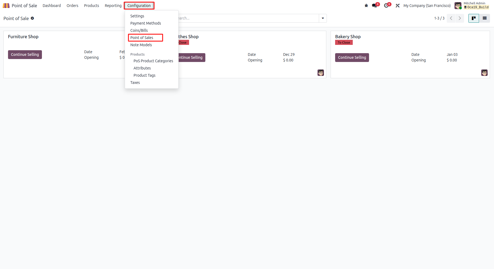
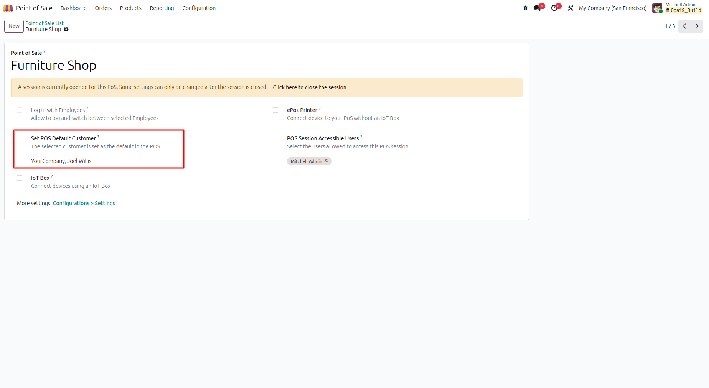
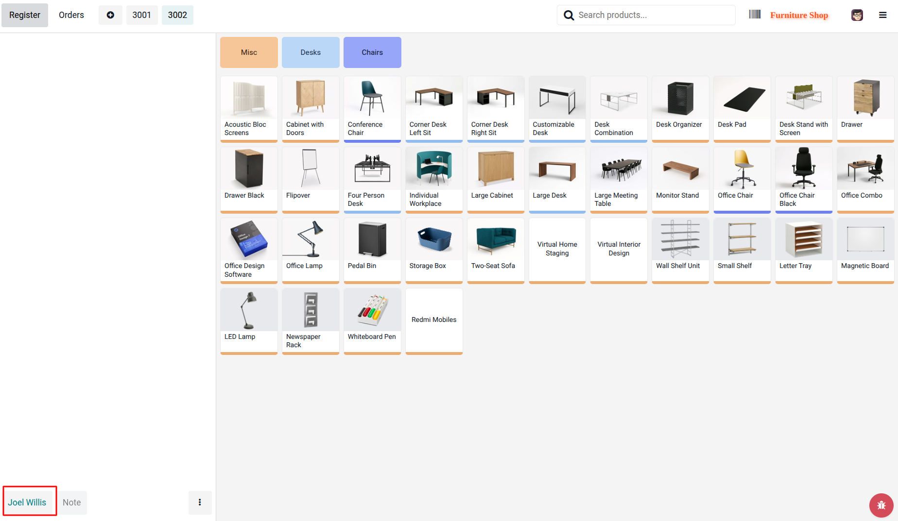

Step 1

Navigate to the Point of Sale module.
Automatically assign a default customer when opening a Point of Sale session.
Navigate to the Point of Sale module.
Go to Configuration and select Point of Sale.

Select a customer in the Set POS Default Customer field. This customer will be automatically assigned when the POS session starts.

When the POS session is opened, the configured default customer is automatically selected on the order screen.
